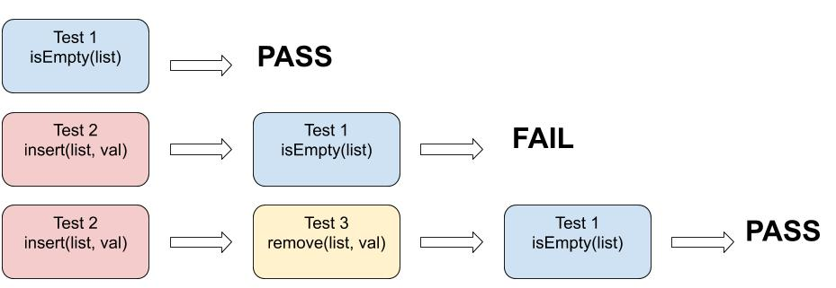

Flaky test¶
Unit tests should always have the same results: it will fail or it will pass. In other words, the result should be deterministic. But, sometimes, the same test shows both behaviors, even if there was no change in that unit[BLH+18]. These non-deterministic tests are known as Flaky Tests and they are more common than you might think. A Google Engineer[Mic16] says that 16% of their tests have some flakiness. When the code is passing in the Continuous Integration (CI) system, and a failure occurs, it ends up slowing down or preventing the evolution of the entire pipeline until the fault is found and resolved causing an increase in cost. The problem is that it is difficult to know when a test really failed or when it is Flaky[Mic16].
Hands On¶
You can execute the example brought by this chapter by clicking the Open in Colab button below. Run the test several times and analyze the different outputs.

The following cell contains the code to simulate our application. It has a thread that sleeps for a random amount of time between 0 and 10 seconds and then sets the value of a property to 100.
import random
import time
from threading import Thread
class app(Thread):
def __init__ (self):
Thread.__init__(self)
self.res = 0
def setResult(self, result):
self.res = result
def getResult(self):
return self.res
def run(self):
sleep_length = random.random() * 10
time.sleep(sleep_length)
self.setResult(100)
To test the code, we’re going to use unittest, a python unit testing framework. In our test, we start a thread as defined above and wait 7 seconds to get the result from that thread.
If the random sleep time from the thread is greater than or equal to 7 seconds, the value of result won’t have been set to 100 when the assertEqual function runs, so, the test will fail.
If the random value it’s less than 7 seconds, the test will pass.
import unittest
import time
class AppTestCase(unittest.TestCase):
def test_app_function(self):
app_test = app()
app_test.start()
time.sleep(7)
self.assertEqual(100, app_test.getResult())
Given the flakiness in our test, the output of the tests should pass a few times and fail some other times. You should now run the following cells a number of times to see it for yourself the contraditory behavior of the test output.
suite = unittest.TestLoader().loadTestsFromTestCase(AppTestCase)
unittest.TextTestRunner().run(suite)
F
======================================================================
FAIL: test_app_function (__main__.AppTestCase)
----------------------------------------------------------------------
Traceback (most recent call last):
File "<ipython-input-51-25320b01c54c>", line 9, in test_app_function
self.assertEqual(100, app_test.getResult())
AssertionError: 100 != 0
----------------------------------------------------------------------
Ran 1 test in 7.006s
FAILED (failures=1)
<unittest.runner.TextTestResult run=1 errors=0 failures=1>
suite = unittest.TestLoader().loadTestsFromTestCase(AppTestCase)
unittest.TextTestRunner().run(suite)
.
----------------------------------------------------------------------
Ran 1 test in 7.009s
OK
<unittest.runner.TextTestResult run=1 errors=0 failures=0>
Top causes for flaky tests¶
According to Luo et al. (2014)[LHEM14] a test can be flaky for several reasons as shown in the graphic bellow:

Async wait, concurrency, and test order dependency are the most common reasons. So let’s explain more about them.
Async wait: In an asynchronous wait, sometimes the developer uses a
sleepfunction to wait for the end of the execution. If the function finishes before this time, the test passes, if it takes more time, it fails. Many flaky tests caused by the async wait can be fixed usingwaitFor[LHEM14]. This function, instead of presetting a specific amout of time to wait, bounds to the ocurrence of an action, meaning it waits until a certain action takes place.Concurrency: Just like the async wait problem, other issues related to concurrency also have great impact in causing tests to be flaky. These generally derive from the developer not being aware of the order in which the operations are being executed by the different threads. This can be settled by adding a synchronization block or making sure the correct execution order of threads is being obeyed[LHEM14].

In the case presented in this figure, the threads are modifying a shared list. When we try to check if an element of the list is equal to a certain value “x”, depending on which thread modified it last the outcome can be different, causing this code to behave non-deterministically, i.e., flaky.
Test Order Dependency: Sometimes, a test assumes implicit requirements that can’t be complied due to some modification made during the execution of a previous test. In this case, the order in which a set of tests is executed plays a role in influencing the occurrence of a certain output[SLO+19]. For that reason tests should be independent from each other.

As shown in the figure above, when Test 1 for the function isEmpty() is isolated, it passes. But when we run Test 2 for insert() before Test 1, Test 1 fails. We added a new value into the list, so it isn’t empty as expected. However, when we run Test 3 for the function remove() after Test 2 and before Test 1, Test 1 passes again. This time, despite having added a new value into the list, we removed it right after, so when Test 1 runs the list is empty again.
Identifying flaky tests¶
One way to identify these tests is to re-run the tests several times and mark the tests that show contradictory behaviors as “flaky”. But, it’s hard to determine how many times you need to re-run a test until it proves to be flaky[BLH+18]. It could still happen that your test exhibited a consistent behavior of failure but it was flaky. What some developers do is to set a threshold for the number of executions after which if the test continuosly gives a failure, they would consider to truly exist a bug in the code[Mic16].
There are also tools, like SCOPE[Lee20], that help to identify these tests in a single run.
The important thing is to identify the flakiness as soon as possible. Establishing a routine where the system is tested several times helps to identify a flaky earlier, reducing the impact on the development of the project.
Dealing with flaky tests¶
Now that we know what a flaky test is and what could cause them, we need to learn how to deal with this type of test.
The approach some teams have to deal with flaky tests is to reject the test that exhibited this behavior, as examining if the issue is with the test or with the code takes time and delays development[Mic16]. Hence the easiest and most straightforward approach is to assume that the test is incorrect and not the code. However, this may not be the best alternative. Ff there is in fact a bug in the code, it can escalate to bigger problems by pushing a broken code ahead.
A safe initial approach is to start tagging tests that are flaky. Beyond that, you’ll need to investigate the reason why a test showed such behavior and to further analyze the impact caused by this issue. In this case, it’s extremely important to collect as much information as possible during the execution of each test: logs, specificities from the environment and memory data from the moment the test was executed, etc[Lee20]. This way it’s easier to reproduce the test that failed and to compare what’s different from the test that passed. As mentioned before, some teams reproduce a failed test countless times, which also helps to evaluate how flaky a test is. Another important piece of information to be considered is the exact state of the project in which this test started to flake, since it’s usually more complex to find the root problem in tests with older failures.
Once a test is tagged as flaky and data about its execution is collected, you can put this test into quarantine. Its output is disregarded and it shouldn’t be executed in the master pipeline until the issue with it is fixed[Lee20]. Then the assigned developer will start debugging the test, equipped with all the information about in which context this specific test failed and in which it passed. Because most teams set dealing with flaky tests as a high priority, these tests are generally fixed quickly[Lee20].
References¶
- BLH+18(1,2)
Jonathan Bell, Owolabi Legunsen, Michael Hilton, Lamyaa Eloussi, Tifany Yung, and Darko Marinov. Deflaker: automatically detecting flaky tests. In Proceedings of the 40th International Conference on Software Engineering, ICSE ’18, 433–444. New York, NY, USA, 2018. Association for Computing Machinery. URL: https://doi.org/10.1145/3180155.3180164, doi:10.1145/3180155.3180164.
- Lee20(1,2,3,4)
Bryan Lee. How can we peacefully co-exist with flaky tests? Apr 2020. Accessed: 2020-07-27. URL: https://medium.com/scopedev/how-can-we-peacefully-co-exist-with-flaky-tests-3c8f94fba166.
- LHEM14(1,2,3)
Qingzhou Luo, Farah Hariri, Lamyaa Eloussi, and Darko Marinov. An empirical analysis of flaky tests. In Proceedings of the 22nd ACM SIGSOFT International Symposium on Foundations of Software Engineering, FSE 2014, 643–653. New York, NY, USA, 2014. Association for Computing Machinery. URL: https://doi.org/10.1145/2635868.2635920, doi:10.1145/2635868.2635920.
- Mic16(1,2,3,4)
John Micco. Flaky tests at google and how we mitigate them. May 2016. Accessed: 2020-07-27. URL: https://testing.googleblog.com/2016/05/flaky-tests-at-google-and-how-we.html.
- SLO+19
August Shi, Wing Lam, Reed Oei, Tao Xie, and Darko Marinov. Ifixflakies: a framework for automatically fixing order-dependent flaky tests. In Proceedings of the 2019 27th ACM Joint Meeting on European Software Engineering Conference and Symposium on the Foundations of Software Engineering, ESEC/FSE 2019, 545–555. New York, NY, USA, 2019. Association for Computing Machinery. URL: https://doi.org/10.1145/3338906.3338925, doi:10.1145/3338906.3338925.